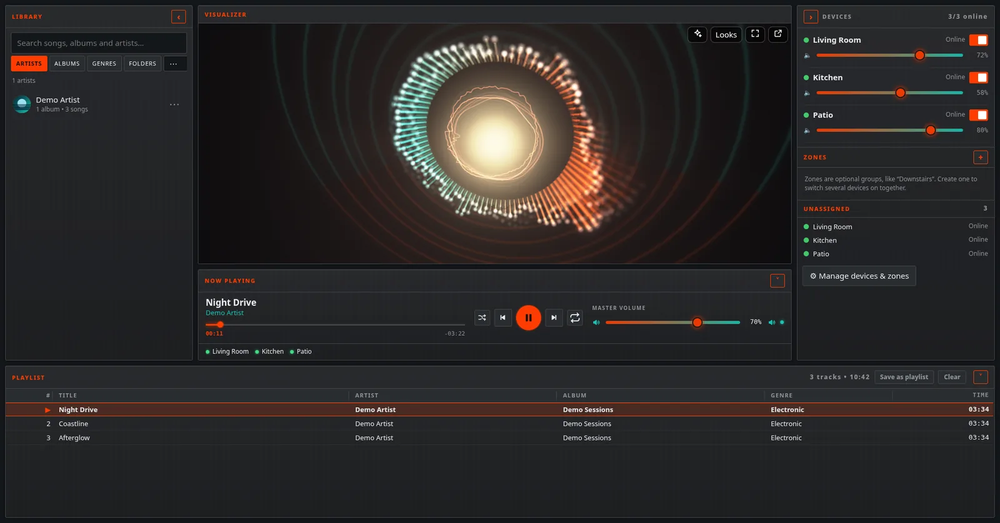
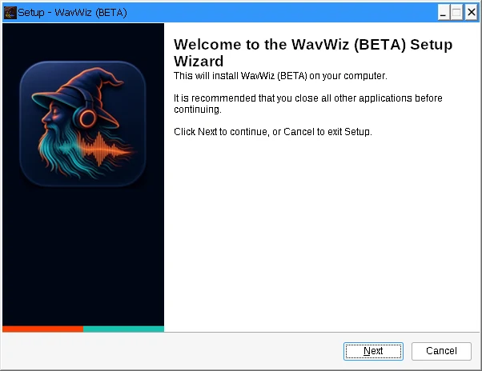
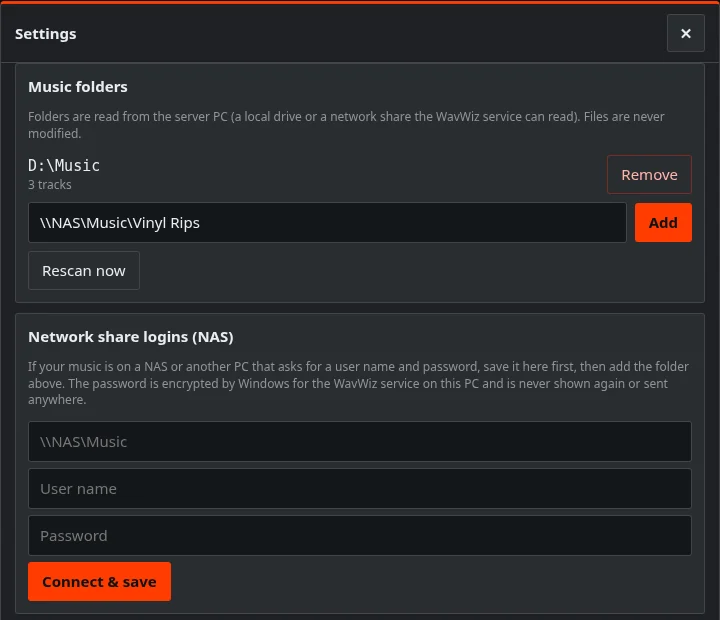
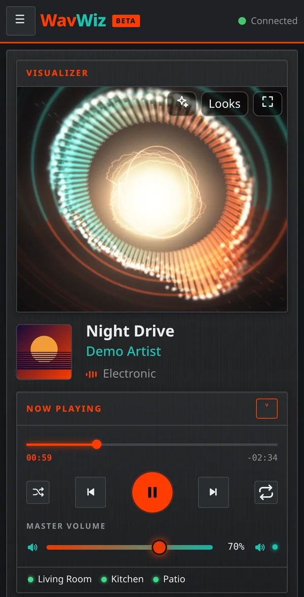

Litecoin
LTC
ltc1qx4y3ncgjzgl6nydfwu3wzp7lwzmf2cysacr64d
Turn an always-on Windows PC into a music server for the whole house. Your library and internet radio play in sync on your PCs, phones and tablets. Phones just open a web page.
Free (MIT)64-bit Windows 10 or 11Release notes
Inside the app

Features
Every device plays the same stream against a shared clock, and WavWiz keeps correcting each device's drift.
Bluetooth speakers and TV audio run late. Give each device its own 0–1000 ms delay and adjust it live while the music plays.
Windows PCs play through their own speakers (wired, HDMI or Bluetooth) with WavWiz Player. Phones, tablets and Macs play in a web browser, with no app to install.
iPhone, iPad and Mac see one speaker, “WavWiz – Whole House”. Whatever you send plays in every room, with title and artwork.
Off by default. Needs your own Spotify Premium account. Unofficial.
Local folders and NAS shares, search and browse by artist, album, genre or folder, playlists, gapless albums, ReplayGain/R128 volume leveling, and an internet radio finder.
Everyone can add songs from their own phone. Group rooms into zones, save scenes, and start them on a schedule.
Rip CDs to FLAC on the server PC. WavWiz looks up missing tags and covers on MusicBrainz and writes nothing until you approve it.
Eight visualizers for a big screen. Five themes, or pick your own colors.
No cloud account, no analytics, no telemetry. Local network only by default. For access away from home, use your own Tailscale. WavWiz doesn't open ports to the internet.
Visualizer showcase
All eight visualizers, captured from the app.
How it works
Run the installer on the PC that stays on (ideally the one with your music) and choose WavWiz Server. Keep the suggested home-network address and set an admin password.

In Settings › Library, add a local folder or a network share like \\NAS\Music. If the share needs a password, save it under Network share logins first.

On each Windows PC with speakers, run the installer and choose WavWiz Player. It finds the server (enter the pairing code if asked). On phones and tablets, open the server's address in the browser. For a TV, use a PC or laptop connected to it.

FAQ
Yes. WavWiz is free and open source under the MIT license. There's nothing to buy, no subscription and no account to create.
Every device plays the same stream against a shared clock, and WavWiz keeps correcting each device's drift so rooms stay together. Bluetooth speakers and TVs add their own lag, so if a room sounds behind, raise that device's delay (0 to 1000 ms) while the music plays until the echo is gone. No sync measurements have been published yet.
WavWiz is a public beta. Today: smart-TV built-in browsers (LG webOS confirmed) freeze and don't join as a speaker, so for a TV use a PC or laptop connected to it. The server runs only on 64-bit Windows 10 or 11, with no Mac or Linux server and no Docker image. AirPlay shows up as one whole-house speaker, not one per room, and it's classic AirPlay, so iPhone won't group it with AirPlay 2 speakers. WavWiz can't play to Sonos, Chromecast or DLNA speakers. On iPhone, tap the page once to start the sound.
The installer isn't code-signed yet, so SmartScreen doesn't recognize it. If you downloaded it from the official WavWiz releases page on GitHub, click More info, then Run anyway. To double-check the file, compare its SHA-256 checksum with the one on the release page.
WavWiz is a hobby project by vdubbin74, who builds his own speakers and keeps an always-on Windows PC at home. He came up with WavWiz, set the spec, makes the design decisions and tests the builds at home. AI coding agents wrote the code, and AI helped write the docs and this site. The source is on GitHub under the MIT license.
Report bugs on GitHub Issues. For questions, ideas and setup help, use WavWiz Discussions on GitHub.
WavWiz is free. If it makes your house sound better, a tip helps keep it going.
LTC
ltc1qx4y3ncgjzgl6nydfwu3wzp7lwzmf2cysacr64d
XMR
44FpjtjsaBzABrjf8Wmr2TcvEbUWvi5iW3tXP67APgNe6Stv1kkxHUDEFbtG4p6XBBThD76JY8sJvQSsRfZgWiqjHRJ7bDt
BTC
bc1qauyj5n6ghg0pc55ee6u5vfm4efccus9rvmgala
PEP
Pby4S9GQQhgEhJ5Sm7A6xLnTVcGuVnvfqQ
The Dogecoin-fork Pepecoin, not the Ethereum PEPE token.
Double-check the address in your wallet before sending. Crypto transactions can't be reversed.
Not into crypto? A good bug report helps just as much.
Public beta. The installer isn't code-signed yet, so Windows SmartScreen will warn. Check the SHA-256 on the release page.